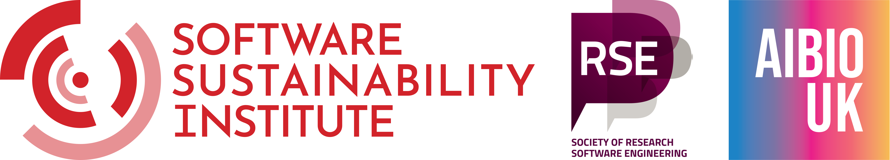

Open Software Week 2025#
We are excited to announce our inaugural NIU Open Software Week, taking place in August 2025 in London, UK. This event will bring together researchers, developers, and users of open-source software for some hands-on training, community-building and hacking.
Application period has ended and selected applicants have been notified.
August 11-15 2025, Sainsbury Wellcome Centre
April 16th 2025: Applications openJune 6th 2025: Applications closeEnd of June/Early July 2025: Applicants are notified of acceptance
Schedule#
Sessions will run daily between 10:00 and 17:00. Here is an overview of the whole week:


There are three main tracks targeted to different audiences. We encourage you to read each track’s description and choose the one that best fits your interests. You can apply for at most 2 of 3 main tracks, and note that Animals in Motion and BrainGlobe cannot be combined as they are running in parallel.

Use open-source tools to track and analyse animal motion from video footage.

Use the BrainGlobe ecosystem of computational neuroanatomy tools to analyse whole-brain microscopy datasets.

Bridging technical gaps and communities to process and analyse large 3D imaging datasets with open-source tools.
We also offer a series of satellite events which are open to all participants and are designed to provide additional training and networking opportunities. You can apply for any number of satellite events, but note that the ones on Thursday cannot be combined with the Big Imaging Data track.
Intro to Python
Python is one of the most popular programming languages worldwide and is used in all areas of science. As one of the most flexible languages it can be used to automate routine tasks, visualise data, process images and run statistical tests, along with many other applications.
The morning session will introduce you to the basics of programming in Python and get you up and running on your own machine. No experience is necessary, all you need is a laptop you can install software on.
The afternoon session will provide some further Python training, and particularly introduce good practices that will pay dividends as you dive deeper into programming.
Contents
Morning
Introduction to Python
Variables
Data types
Loops
Conditional statements
List comprehension
Loading and saving data
Writing your first Python script
Afternoon
Using third party libraries from pip and conda
Functions
Classes and objects
Errors and exceptions
Organising your Python project and importing functions
Documenting your code
Careers Clinic
The Careers Clinic will consist of a panel discussion from diverse Research Technology Professionals with a background in life sciences. We hope for the discussion to benefit those interested in exploring non-traditional career paths in research. The audience is encouraged to prepare questions for the panellists, and reflect on their own careers.
Panelists include:
Mayo Faulkner, Senior User Experience Engineer at the International Brain Lab
Vicki Yorke-Edwards, Senior Research Data Steward at UCL Advanced Research Computing Centre
Batool Almarzouq, Manager of Imago (Imagery Smart Data Service), part of the Smart Data Research UK programme
Laura Porta, Senior Research Software Engineer in the Neuroinformatics Unit
Jonas Hartmann, Postdoctoral Researcher at UCL Cell + Developmental Biology
If you’ve signed up for the Careers Clinic, please arrive at the Sainsbury Wellcome Centre by 11:30 on Thursday. This will give you a chance to grab a coffee from the Ground Floor Lecture Theatre before being guided to the 3rd Floor Seminar Room for the panel discussion, which will start at 11:45.
Collaborative coding with git
Learn how to version control your code and collaborate with others using git and GitHub. This workshop is open to all but is especially recommended for those who are planning to participate in the following day’s hackathon.
We will cover:
An introduction to
gitand GitHubHow to set up
giton your computerUsing
gitto save, track and manage your codeSharing code and working collaboratively with
git/ GitHub
Hackday
On Friday, 15 August we will run a collaborative hackday. This will involve self-organising into small groups and tackling a project of interest hands-on and together, in a fun atmosphere.
If you’ve signed up for the Hackday, we encourage you to start thinking about potential project ideas. You can propose an idea by visiting this GitHub repository and clicking “New Issue” > “Hackday project idea”.
You can browse existing proposals on this board. If something catches your eye, feel free to leave a comment under the relevant issue to express your interest or ask questions. We hope that this will get the ball rolling on team formation, which will be finalised on Friday morning. Don’t worry if you don’t have a concrete idea just yet — we expect plenty of Hackday ideas to emerge organically throughout Open Software Week.
Projects don’t need to involve coding. As long as it’s something that would benefit from collaboration with other Open Software Week participants, it’s fair game! Here are a few examples of the kinds of projects that could be a great fit:
Apply a tool: Use any software you learned about during the week to analyse an interesting dataset (your own or a public one).
Give feedback: Raise issues on relevant open-source tools. Suggest missing features, report bugs, or flag unclear documentation.
Make a contribution: Submit a pull request to an open-source repository. If it’s your first time, don’t worry; there’ll be plenty of people around to support you.
Collaborative writing: Draft something together, like a blog post, white paper, or improved documentation.
Prototype an idea: Try out a cool new analysis or method on real-world data and share your findings.
We’re looking forward to seeing what you come up with! You will get the chance to present your progress at the end of the Hackday.
Prerequisites#
As this is a hands-on event, you will need to bring your own laptop and charger. Any fairly recent laptop will be suitable, you don’t need a dedicated GPU.
Note
If you already have a working Anaconda or Miniconda installation and have used it to run Python scripts or Jupyter notebooks, you can likely skip ahead to the additional track-specific prerequisites.
To prepare your computer for Python development, we recommend following the Software Carpentries installation instructions, in particular:
Bash Shell, to run terminal commands
Git, including a GitHub account
Python, via the conda-forge installer. Please make sure you install a Python version >= 3.12 (e.g. 3.12 is fine, 3.10 is not).
You’ll also need a code editor (IDE) configured for Python. If you already have one you’re comfortable with, feel free to use it. Otherwise, we recommend:
Additional track-specific prerequisites
Apart from the general development tools mentioned above, each track may have additional prerequisites. The following links will take you there:
Please arrive 30 minutes early if you are facing problems installing course prerequisites.
Funding#
The Animals in Motion and the Big Imaging Data tracks have been made possible by Software Sustainability Institute fellowships to Niko Sirmpilatze and Alessandro Felder, respectively. The NIU Open Software Week is further supported by the Sainsbury Wellcome Centre, the Society for Research Software Engineering and AIBIO-UK. We thank the Sainsbury Wellcome Centre and the Gatsby Computational Neuroscience Unit for providing facilities for the event.
{kind=link}